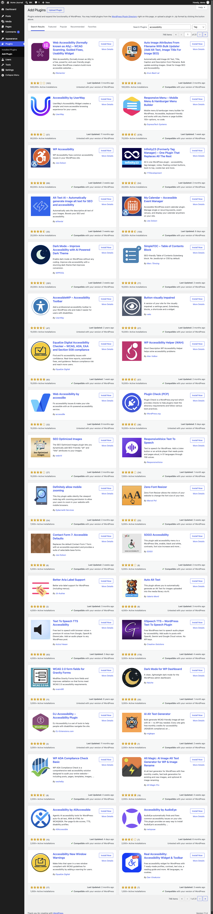

Screen spec · p044
Add Plugins — Search
Search results inside Add Plugins, captured for the tag "accessibility": 748 items over 21 pages, 36 cards per page, with an extra "Search Results" tab.

View 2 captures →Spec items
| ID | Type | Spec | Condition | Evidence | Confidence | Notes |
|---|---|---|---|---|---|---|
SPEC-p044-01 | Display | A "Search Results" tab is added in front of "Featured" and underlined as the current tab. | A search is active | init | Verified | |
SPEC-p044-02 | Display | The search box contains "accessibility" and the type dropdown shows "Tag". | URL `type=tag&s=accessibility` | init | Verified | |
SPEC-p044-03 | List & search | The list header shows "748 items" and a page control reading page 1 "of 21". | Always | init | Verified | |
SPEC-p044-04 | List & search | One page holds 36 result cards in two columns, starting with "Web Accessibility (formally known as Ally) – WCAG Scanning, Guided Fixes, Usability Widget". | Always | init | Verified | The page is about 6,000px tall; the very bottom continues in s02. |
SPEC-p044-05 | Display | Result cards show either "Compatible with your version of WordPress" or "Untested with your version of WordPress". | Depends on the plugin | init | Verified | |
SPEC-p044-06 | List & search | The item count and page control are repeated under the last cards ("748 items", "1 of 21"). | Page 1 | s02 | Verified | |
SPEC-p044-07 | Action | Changing the text or the type dropdown probably reruns the search without leaving the screen. | Always | - | Inferred | Not tried. |
About this screen
Purpose
The main way to find a plugin for a specific need; the same view serves keyword, author and tag searches.
Shown when
Shown after a search in "Search Plugins" or a click on a tag (URL `tab=search` with `type` and `s`). Shown to the logged-in user "demo" (an Administrator); whether lower roles can open it was not captured.
Who uses it and how
A site administrator with a specific need; they compare ratings, installation counts and compatibility across results.
Main features
- Search the directory by keyword, author or tag
- Page through results
- Compare ratings, installations and compatibility
- Install with "Install Now"
UI elements and behavior
| Element | Behavior | Notes |
|---|---|---|
| "Upload Plugin" button | Switches to the .zip upload form (inferred). | Next to the "Add Plugins" heading. |
| Tab bar | Switches between "Featured", "Popular", "Recommended" and "Favorites"; the current tab is underlined in blue. | |
| "Search Plugins" box and type dropdown | Searches the WordPress Plugin Directory by keyword, author or tag (inferred). | At the right end of the tab bar. |
| Plugin card | Shows icon, name, short description, author ("By …"), star rating with the number of ratings, "Last Updated", active installations and a compatibility line. | Two cards per row at this width. |
| "Install Now" button | Downloads and installs that plugin on the site (inferred). | Not clicked on any card. |
| "Search Results" tab | Marks the current view as a search; the other tabs leave the search. | Only present while a search is active. |
| Page control | First, previous, page number field, next and last buttons. | Top and bottom of the list. |
Input fields
| Field | Type | Required | Assumed validation | Notes |
|---|---|---|---|---|
| Search Plugins | search | No | Free text; the search probably runs as the user types or on Enter. | GET parameter `s`. |
| Search plugins by: | select | No | One of "Keyword", "Author", "Tag". | GET parameter `type`; "Keyword" is the default. |
| Current Page | text | No | Probably a whole number from 1 to 21. | Field name `paged`. |
Usage flow
- Type a word into "Search Plugins" (or click a tag under "Popular tags").
- Pick "Keyword", "Author" or "Tag" if needed.
- Scan the result cards and open "More Details".
- Press "Install Now" on the chosen plugin.
Navigation
| Trigger | Goes to | Notes |
|---|---|---|
| "Upload Plugin" button | p040 Add Plugins — Upload | Not clicked. |
| Tab "Featured" | p014 Add Plugins — Featured | |
| Tab "Popular" | p041 Add Plugins — Popular | |
| Tab "Recommended" | p042 Add Plugins — Recommended | |
| Tab "Favorites" | p043 Add Plugins — Favorites | |
| "More Details" on a card | p039 Add Plugins — Plugin Information | Opens as an overlay window (inferred). |
Variants and business rules
States and variants
Captured for one tag search, page 1. A search with no results, keyword and author searches, and later pages were not captured. The capture is split into the initial image and s02 (the bottom).
Business rules and constraints
The result order is decided by the WordPress.org directory, probably by relevance. All 36 buttons on this page read "Install Now", so none of these plugins is installed on the site.
States reached by interaction
| State | Action | Result | Description | Shown when |
|---|---|---|---|---|
| s02 | Part 2/2 (6000–6013px) | Continuation of a tall screen | The bottom edge of the search results: the footers of the last two cards, then "748 items" with the page control "1 of 21" and the page footer. | After scrolling to the end of page 1 of the search results. |
Open questions
- What is shown when a search returns nothing?
- Is the search rerun on every keystroke or only on Enter?
Auto-extracted data (headings, links, buttons, tables, click decisions)
Headings
- H1: Add Plugins
- H2: Filter plugins list
- H2: Plugins list navigation
- H2: Plugins list
- H3: Web Accessibility (formally known as Ally) – WCAG Scanning, Guided Fixes, Usability Widget
- H3: Auto Image Attributes From Filename With Bulk Updater (Add Alt Text, Image Title For Image SEO)
- H3: Accessibility by UserWay
- H3: Responsive Menu – Mobile Menu & Hamburger Menu Builder
- H3: WP Accessibility
- H3: Infinity23 (Formerly Tag Manager) – One Plugin That Replaces All The Rest
- H3: Alt Text AI – Automatically generate image alt text for SEO and accessibility
- H3: My Calendar – Accessible Event Manager
- H3: Dark Mode – Improve Accessibility with AI Powered Dark Theme
- H3: SimpleTOC – Table of Contents Block
- H3: AccessibleWP – Accessibility Toolbar
- H3: Button visually impaired
- H3: Equalize Digital Accessibility Checker – WCAG, ADA, EAA and Section 508 compliance
- H3: WP Accessibility Helper (WAH)
- H3: Web Accessibility by accessiBe
- H3: Plugin Check (PCP)
- H3: SEO Optimized Images
- H3: ResponsiveVoice Text To Speech
- H3: Definitely allow mobile zooming
- H3: Zeno Font Resizer
- H3: Contact Form 7: Accessible Defaults
- H3: SOGO Accessibility
- H3: Better Aria Label Support
- H3: Auto Alt Text
- H3: Text To Speech TTS Accessibility
- H3: GSpeech TTS – WordPress Text To Speech Plugin
- H3: WCAG 2.0 form fields for Gravity Forms
- H3: Dark Mode for WP Dashboard
- H3: DJ-Accessibility – Accessibility Plugin
- H3: AI Alt Text Generator
- H3: WP ADA Compliance Check Basic
- H3: Alt Magic: AI Image Alt Text Generator for WP & Image Rename
- H3: Accessibility by AllAccessible
- H3: Accessibility by AudioEye
- H3: Accessibility New Window Warnings
- H3: Real Accessibility: Accessibility Widget & Toolbar
Tables
-
Internal links
| Text | URL | Notes |
|---|---|---|
| Skip to main content | http://localhost:8899/wp-admin/plugin-install.php?tab=search&type=tag&s=accessibility#wpbody-content | |
| Skip to toolbar | http://localhost:8899/wp-admin/plugin-install.php?tab=search&type=tag&s=accessibility#wp-toolbar | |
| Dashboard | http://localhost:8899/wp-admin/index.php | |
| Home | http://localhost:8899/wp-admin/index.php | |
| Updates | http://localhost:8899/wp-admin/update-core.php | |
| Posts | http://localhost:8899/wp-admin/edit.php | |
| All Posts | http://localhost:8899/wp-admin/edit.php | |
| Add Post | http://localhost:8899/wp-admin/post-new.php | Excluded pattern: post-new\.php |
| Categories | http://localhost:8899/wp-admin/edit-tags.php?taxonomy=category | |
| Tags | http://localhost:8899/wp-admin/edit-tags.php?taxonomy=post_tag | |
| Media | http://localhost:8899/wp-admin/upload.php | |
| Library | http://localhost:8899/wp-admin/upload.php | |
| Add Media File | http://localhost:8899/wp-admin/media-new.php | |
| Pages | http://localhost:8899/wp-admin/edit.php?post_type=page | |
| All Pages | http://localhost:8899/wp-admin/edit.php?post_type=page | |
| Add Page | http://localhost:8899/wp-admin/post-new.php?post_type=page | Excluded pattern: post-new\.php |
| Comments 1 1 Comment in moderation | http://localhost:8899/wp-admin/edit-comments.php | |
| Appearance | http://localhost:8899/wp-admin/themes.php | |
| Themes | http://localhost:8899/wp-admin/themes.php | |
| Editor | http://localhost:8899/wp-admin/site-editor.php | |
| Fonts | http://localhost:8899/wp-admin/font-library.php | |
| Plugins | http://localhost:8899/wp-admin/plugins.php | |
| Installed Plugins | http://localhost:8899/wp-admin/plugins.php | |
| Add Plugin | http://localhost:8899/wp-admin/plugin-install.php | |
| Users | http://localhost:8899/wp-admin/users.php | |
| All Users | http://localhost:8899/wp-admin/users.php | |
| Add User | http://localhost:8899/wp-admin/user-new.php | |
| Profile | http://localhost:8899/wp-admin/profile.php | |
| Tools | http://localhost:8899/wp-admin/tools.php | |
| Available Tools | http://localhost:8899/wp-admin/tools.php | |
| Import | http://localhost:8899/wp-admin/import.php | |
| Export | http://localhost:8899/wp-admin/export.php | |
| Site Health 2 | http://localhost:8899/wp-admin/site-health.php | |
| Export Personal Data | http://localhost:8899/wp-admin/export-personal-data.php | Risky URL keyword: export |
| Erase Personal Data | http://localhost:8899/wp-admin/erase-personal-data.php | |
| Theme File Editor | http://localhost:8899/wp-admin/theme-editor.php | |
| Plugin File Editor | http://localhost:8899/wp-admin/plugin-editor.php | |
| Settings | http://localhost:8899/wp-admin/options-general.php | |
| General | http://localhost:8899/wp-admin/options-general.php | |
| Connectors | http://localhost:8899/wp-admin/options-connectors.php | |
| Writing | http://localhost:8899/wp-admin/options-writing.php | |
| Reading | http://localhost:8899/wp-admin/options-reading.php | |
| Discussion | http://localhost:8899/wp-admin/options-discussion.php | |
| Media | http://localhost:8899/wp-admin/options-media.php | |
| Permalinks | http://localhost:8899/wp-admin/options-permalink.php | |
| Privacy | http://localhost:8899/wp-admin/options-privacy.php | |
| Menu | http://localhost:8899/wp-admin/plugin-install.php?tab=search&type=tag&s=accessibility# | |
| About WordPress | http://localhost:8899/wp-admin/about.php | |
| About WordPress | http://localhost:8899/wp-admin/about.php | |
| Get Involved | http://localhost:8899/wp-admin/contribute.php | |
| ⌘K Open command palette | http://localhost:8899/wp-admin/plugin-install.php?tab=search&type=tag&s=accessibility# | |
| 1 1 Comment in moderation | http://localhost:8899/wp-admin/edit-comments.php | |
| New | http://localhost:8899/wp-admin/post-new.php | Excluded pattern: post-new\.php |
| Post | http://localhost:8899/wp-admin/post-new.php | Excluded pattern: post-new\.php |
| Media | http://localhost:8899/wp-admin/media-new.php | |
| Page | http://localhost:8899/wp-admin/post-new.php?post_type=page | Excluded pattern: post-new\.php |
| User | http://localhost:8899/wp-admin/user-new.php | |
| Howdy, demo | http://localhost:8899/wp-admin/profile.php | |
| demoEdit Profile | http://localhost:8899/wp-admin/profile.php | |
| Overview | http://localhost:8899/wp-admin/plugin-install.php?tab=search&type=tag&s=accessibility#tab-panel-overview | |
| Adding Plugins | http://localhost:8899/wp-admin/plugin-install.php?tab=search&type=tag&s=accessibility#tab-panel-adding-plugins | |
| Upload Plugin | http://localhost:8899/wp-admin/plugin-install.php?tab=upload | |
| Search Results | http://localhost:8899/wp-admin/plugin-install.php?tab=search | |
| Featured | http://localhost:8899/wp-admin/plugin-install.php?tab=featured | |
| Popular | http://localhost:8899/wp-admin/plugin-install.php?tab=popular | |
| Recommended | http://localhost:8899/wp-admin/plugin-install.php?tab=recommended | |
| Favorites | http://localhost:8899/wp-admin/plugin-install.php?tab=favorites | |
| Next page › | http://localhost:8899/wp-admin/plugin-install.php?tab=search&type=tag&s=accessibility&paged=2 | |
| Last page » | http://localhost:8899/wp-admin/plugin-install.php?tab=search&type=tag&s=accessibility&paged=21 | |
| Web Accessibility (formally known as Ally) – WCAG Scanning, | http://localhost:8899/wp-admin/plugin-install.php?tab=plugin-information&plugin=pojo-accessibility&TB_iframe=true&width=600&height=550 | |
| Install Now | http://localhost:8899/wp-admin/update.php?action=install-plugin&plugin=pojo-accessibility&_wpnonce=eaca7c170a | State-changing token in URL: _wpnonce |
| More Details | http://localhost:8899/wp-admin/plugin-install.php?tab=plugin-information&plugin=pojo-accessibility&TB_iframe=true&width=600&height=550 | |
| Auto Image Attributes From Filename With Bulk Updater (Add A | http://localhost:8899/wp-admin/plugin-install.php?tab=plugin-information&plugin=auto-image-attributes-from-filename-with-bulk-updater&TB_iframe=true&width=600&height=550 | |
| Install Now | http://localhost:8899/wp-admin/update.php?action=install-plugin&plugin=auto-image-attributes-from-filename-with-bulk-updater&_wpnonce=222648fe5f | State-changing token in URL: _wpnonce |
| More Details | http://localhost:8899/wp-admin/plugin-install.php?tab=plugin-information&plugin=auto-image-attributes-from-filename-with-bulk-updater&TB_iframe=true&width=600&height=550 | |
| Accessibility by UserWay | http://localhost:8899/wp-admin/plugin-install.php?tab=plugin-information&plugin=userway-accessibility-widget&TB_iframe=true&width=600&height=550 | |
| Install Now | http://localhost:8899/wp-admin/update.php?action=install-plugin&plugin=userway-accessibility-widget&_wpnonce=cbebaea78c | State-changing token in URL: _wpnonce |
| More Details | http://localhost:8899/wp-admin/plugin-install.php?tab=plugin-information&plugin=userway-accessibility-widget&TB_iframe=true&width=600&height=550 | |
| Responsive Menu – Mobile Menu & Hamburger Menu Builder | http://localhost:8899/wp-admin/plugin-install.php?tab=plugin-information&plugin=responsive-menu&TB_iframe=true&width=600&height=550 | |
| Install Now | http://localhost:8899/wp-admin/update.php?action=install-plugin&plugin=responsive-menu&_wpnonce=9e28f23d97 | State-changing token in URL: _wpnonce |
| More Details | http://localhost:8899/wp-admin/plugin-install.php?tab=plugin-information&plugin=responsive-menu&TB_iframe=true&width=600&height=550 | |
| WP Accessibility | http://localhost:8899/wp-admin/plugin-install.php?tab=plugin-information&plugin=wp-accessibility&TB_iframe=true&width=600&height=550 | |
| Install Now | http://localhost:8899/wp-admin/update.php?action=install-plugin&plugin=wp-accessibility&_wpnonce=10ca7a68ff | State-changing token in URL: _wpnonce |
| More Details | http://localhost:8899/wp-admin/plugin-install.php?tab=plugin-information&plugin=wp-accessibility&TB_iframe=true&width=600&height=550 | |
| Infinity23 (Formerly Tag Manager) – One Plugin That Replaces | http://localhost:8899/wp-admin/plugin-install.php?tab=plugin-information&plugin=tag-manager-header-body-footer&TB_iframe=true&width=600&height=550 | |
| Install Now | http://localhost:8899/wp-admin/update.php?action=install-plugin&plugin=tag-manager-header-body-footer&_wpnonce=3a47df7509 | State-changing token in URL: _wpnonce |
| More Details | http://localhost:8899/wp-admin/plugin-install.php?tab=plugin-information&plugin=tag-manager-header-body-footer&TB_iframe=true&width=600&height=550 | |
| Alt Text AI – Automatically generate image alt text for SEO | http://localhost:8899/wp-admin/plugin-install.php?tab=plugin-information&plugin=alttext-ai&TB_iframe=true&width=600&height=550 | |
| Install Now | http://localhost:8899/wp-admin/update.php?action=install-plugin&plugin=alttext-ai&_wpnonce=d72ecebb05 | State-changing token in URL: _wpnonce |
| More Details | http://localhost:8899/wp-admin/plugin-install.php?tab=plugin-information&plugin=alttext-ai&TB_iframe=true&width=600&height=550 | |
| My Calendar – Accessible Event Manager | http://localhost:8899/wp-admin/plugin-install.php?tab=plugin-information&plugin=my-calendar&TB_iframe=true&width=600&height=550 | |
| Install Now | http://localhost:8899/wp-admin/update.php?action=install-plugin&plugin=my-calendar&_wpnonce=983c6053d6 | State-changing token in URL: _wpnonce |
| More Details | http://localhost:8899/wp-admin/plugin-install.php?tab=plugin-information&plugin=my-calendar&TB_iframe=true&width=600&height=550 | |
| Dark Mode – Improve Accessibility with AI Powered Dark Theme | http://localhost:8899/wp-admin/plugin-install.php?tab=plugin-information&plugin=wp-dark-mode&TB_iframe=true&width=600&height=550 | |
| Install Now | http://localhost:8899/wp-admin/update.php?action=install-plugin&plugin=wp-dark-mode&_wpnonce=ef1c98f10f | State-changing token in URL: _wpnonce |
| More Details | http://localhost:8899/wp-admin/plugin-install.php?tab=plugin-information&plugin=wp-dark-mode&TB_iframe=true&width=600&height=550 | |
| SimpleTOC – Table of Contents Block | http://localhost:8899/wp-admin/plugin-install.php?tab=plugin-information&plugin=simpletoc&TB_iframe=true&width=600&height=550 | |
| Install Now | http://localhost:8899/wp-admin/update.php?action=install-plugin&plugin=simpletoc&_wpnonce=0f8ad7c018 | State-changing token in URL: _wpnonce |
| More Details | http://localhost:8899/wp-admin/plugin-install.php?tab=plugin-information&plugin=simpletoc&TB_iframe=true&width=600&height=550 | |
| AccessibleWP – Accessibility Toolbar | http://localhost:8899/wp-admin/plugin-install.php?tab=plugin-information&plugin=accessible-poetry&TB_iframe=true&width=600&height=550 | |
| Install Now | http://localhost:8899/wp-admin/update.php?action=install-plugin&plugin=accessible-poetry&_wpnonce=34902c8239 | State-changing token in URL: _wpnonce |
| More Details | http://localhost:8899/wp-admin/plugin-install.php?tab=plugin-information&plugin=accessible-poetry&TB_iframe=true&width=600&height=550 | |
| Button visually impaired | http://localhost:8899/wp-admin/plugin-install.php?tab=plugin-information&plugin=button-visually-impaired&TB_iframe=true&width=600&height=550 | |
| Install Now | http://localhost:8899/wp-admin/update.php?action=install-plugin&plugin=button-visually-impaired&_wpnonce=5dba735545 | State-changing token in URL: _wpnonce |
| More Details | http://localhost:8899/wp-admin/plugin-install.php?tab=plugin-information&plugin=button-visually-impaired&TB_iframe=true&width=600&height=550 | |
| Equalize Digital Accessibility Checker – WCAG, ADA, EAA and | http://localhost:8899/wp-admin/plugin-install.php?tab=plugin-information&plugin=accessibility-checker&TB_iframe=true&width=600&height=550 | |
| Install Now | http://localhost:8899/wp-admin/update.php?action=install-plugin&plugin=accessibility-checker&_wpnonce=af11bce74b | State-changing token in URL: _wpnonce |
| More Details | http://localhost:8899/wp-admin/plugin-install.php?tab=plugin-information&plugin=accessibility-checker&TB_iframe=true&width=600&height=550 | |
| WP Accessibility Helper (WAH) | http://localhost:8899/wp-admin/plugin-install.php?tab=plugin-information&plugin=wp-accessibility-helper&TB_iframe=true&width=600&height=550 | |
| Install Now | http://localhost:8899/wp-admin/update.php?action=install-plugin&plugin=wp-accessibility-helper&_wpnonce=ffcd3bc1b9 | State-changing token in URL: _wpnonce |
| More Details | http://localhost:8899/wp-admin/plugin-install.php?tab=plugin-information&plugin=wp-accessibility-helper&TB_iframe=true&width=600&height=550 | |
| Web Accessibility by accessiBe | http://localhost:8899/wp-admin/plugin-install.php?tab=plugin-information&plugin=accessibe&TB_iframe=true&width=600&height=550 | |
| Install Now | http://localhost:8899/wp-admin/update.php?action=install-plugin&plugin=accessibe&_wpnonce=eda10a75bb | State-changing token in URL: _wpnonce |
| More Details | http://localhost:8899/wp-admin/plugin-install.php?tab=plugin-information&plugin=accessibe&TB_iframe=true&width=600&height=550 | |
| Plugin Check (PCP) | http://localhost:8899/wp-admin/plugin-install.php?tab=plugin-information&plugin=plugin-check&TB_iframe=true&width=600&height=550 | |
| Install Now | http://localhost:8899/wp-admin/update.php?action=install-plugin&plugin=plugin-check&_wpnonce=13e5149d53 | State-changing token in URL: _wpnonce |
| More Details | http://localhost:8899/wp-admin/plugin-install.php?tab=plugin-information&plugin=plugin-check&TB_iframe=true&width=600&height=550 | |
| SEO Optimized Images | http://localhost:8899/wp-admin/plugin-install.php?tab=plugin-information&plugin=seo-optimized-images&TB_iframe=true&width=600&height=550 | |
| Install Now | http://localhost:8899/wp-admin/update.php?action=install-plugin&plugin=seo-optimized-images&_wpnonce=85d2c50be6 | State-changing token in URL: _wpnonce |
| More Details | http://localhost:8899/wp-admin/plugin-install.php?tab=plugin-information&plugin=seo-optimized-images&TB_iframe=true&width=600&height=550 | |
| ResponsiveVoice Text To Speech | http://localhost:8899/wp-admin/plugin-install.php?tab=plugin-information&plugin=responsivevoice-text-to-speech&TB_iframe=true&width=600&height=550 | |
| Install Now | http://localhost:8899/wp-admin/update.php?action=install-plugin&plugin=responsivevoice-text-to-speech&_wpnonce=b7aa1a174c | State-changing token in URL: _wpnonce |
| More Details | http://localhost:8899/wp-admin/plugin-install.php?tab=plugin-information&plugin=responsivevoice-text-to-speech&TB_iframe=true&width=600&height=550 | |
| Definitely allow mobile zooming | http://localhost:8899/wp-admin/plugin-install.php?tab=plugin-information&plugin=definitely-allow-mobile-zooming&TB_iframe=true&width=600&height=550 | |
| Install Now | http://localhost:8899/wp-admin/update.php?action=install-plugin&plugin=definitely-allow-mobile-zooming&_wpnonce=bfbf48c2fa | State-changing token in URL: _wpnonce |
| More Details | http://localhost:8899/wp-admin/plugin-install.php?tab=plugin-information&plugin=definitely-allow-mobile-zooming&TB_iframe=true&width=600&height=550 | |
| Zeno Font Resizer | http://localhost:8899/wp-admin/plugin-install.php?tab=plugin-information&plugin=zeno-font-resizer&TB_iframe=true&width=600&height=550 | |
| Install Now | http://localhost:8899/wp-admin/update.php?action=install-plugin&plugin=zeno-font-resizer&_wpnonce=0144f1389d | State-changing token in URL: _wpnonce |
| More Details | http://localhost:8899/wp-admin/plugin-install.php?tab=plugin-information&plugin=zeno-font-resizer&TB_iframe=true&width=600&height=550 | |
| Contact Form 7: Accessible Defaults | http://localhost:8899/wp-admin/plugin-install.php?tab=plugin-information&plugin=contact-form-7-accessible-defaults&TB_iframe=true&width=600&height=550 | |
| Install Now | http://localhost:8899/wp-admin/update.php?action=install-plugin&plugin=contact-form-7-accessible-defaults&_wpnonce=dd4a547039 | State-changing token in URL: _wpnonce |
| More Details | http://localhost:8899/wp-admin/plugin-install.php?tab=plugin-information&plugin=contact-form-7-accessible-defaults&TB_iframe=true&width=600&height=550 | |
| SOGO Accessibility | http://localhost:8899/wp-admin/plugin-install.php?tab=plugin-information&plugin=sogo-accessibility&TB_iframe=true&width=600&height=550 | |
| Install Now | http://localhost:8899/wp-admin/update.php?action=install-plugin&plugin=sogo-accessibility&_wpnonce=e7cb6c876f | State-changing token in URL: _wpnonce |
| More Details | http://localhost:8899/wp-admin/plugin-install.php?tab=plugin-information&plugin=sogo-accessibility&TB_iframe=true&width=600&height=550 | |
| Better Aria Label Support | http://localhost:8899/wp-admin/plugin-install.php?tab=plugin-information&plugin=better-aria-label-support&TB_iframe=true&width=600&height=550 | |
| Install Now | http://localhost:8899/wp-admin/update.php?action=install-plugin&plugin=better-aria-label-support&_wpnonce=54f97874b4 | State-changing token in URL: _wpnonce |
| More Details | http://localhost:8899/wp-admin/plugin-install.php?tab=plugin-information&plugin=better-aria-label-support&TB_iframe=true&width=600&height=550 | |
| Auto Alt Text | http://localhost:8899/wp-admin/plugin-install.php?tab=plugin-information&plugin=auto-alt-text&TB_iframe=true&width=600&height=550 | |
| Install Now | http://localhost:8899/wp-admin/update.php?action=install-plugin&plugin=auto-alt-text&_wpnonce=b9889bfb9f | State-changing token in URL: _wpnonce |
| More Details | http://localhost:8899/wp-admin/plugin-install.php?tab=plugin-information&plugin=auto-alt-text&TB_iframe=true&width=600&height=550 | |
| Text To Speech TTS Accessibility | http://localhost:8899/wp-admin/plugin-install.php?tab=plugin-information&plugin=text-to-audio&TB_iframe=true&width=600&height=550 | |
| Install Now | http://localhost:8899/wp-admin/update.php?action=install-plugin&plugin=text-to-audio&_wpnonce=105786fc19 | State-changing token in URL: _wpnonce |
| More Details | http://localhost:8899/wp-admin/plugin-install.php?tab=plugin-information&plugin=text-to-audio&TB_iframe=true&width=600&height=550 | |
| GSpeech TTS – WordPress Text To Speech Plugin | http://localhost:8899/wp-admin/plugin-install.php?tab=plugin-information&plugin=gspeech&TB_iframe=true&width=600&height=550 | |
| Install Now | http://localhost:8899/wp-admin/update.php?action=install-plugin&plugin=gspeech&_wpnonce=a824fae1db | State-changing token in URL: _wpnonce |
| More Details | http://localhost:8899/wp-admin/plugin-install.php?tab=plugin-information&plugin=gspeech&TB_iframe=true&width=600&height=550 | |
| WCAG 2.0 form fields for Gravity Forms | http://localhost:8899/wp-admin/plugin-install.php?tab=plugin-information&plugin=gravity-forms-wcag-20-form-fields&TB_iframe=true&width=600&height=550 | |
| Install Now | http://localhost:8899/wp-admin/update.php?action=install-plugin&plugin=gravity-forms-wcag-20-form-fields&_wpnonce=c3e1abbfed | State-changing token in URL: _wpnonce |
| More Details | http://localhost:8899/wp-admin/plugin-install.php?tab=plugin-information&plugin=gravity-forms-wcag-20-form-fields&TB_iframe=true&width=600&height=550 | |
| Dark Mode for WP Dashboard | http://localhost:8899/wp-admin/plugin-install.php?tab=plugin-information&plugin=dark-mode-for-wp-dashboard&TB_iframe=true&width=600&height=550 | |
| Install Now | http://localhost:8899/wp-admin/update.php?action=install-plugin&plugin=dark-mode-for-wp-dashboard&_wpnonce=b2f4b8cc48 | State-changing token in URL: _wpnonce |
| More Details | http://localhost:8899/wp-admin/plugin-install.php?tab=plugin-information&plugin=dark-mode-for-wp-dashboard&TB_iframe=true&width=600&height=550 | |
| DJ-Accessibility – Accessibility Plugin | http://localhost:8899/wp-admin/plugin-install.php?tab=plugin-information&plugin=dj-accessibility&TB_iframe=true&width=600&height=550 | |
| Install Now | http://localhost:8899/wp-admin/update.php?action=install-plugin&plugin=dj-accessibility&_wpnonce=3e3cdff0ec | State-changing token in URL: _wpnonce |
| More Details | http://localhost:8899/wp-admin/plugin-install.php?tab=plugin-information&plugin=dj-accessibility&TB_iframe=true&width=600&height=550 | |
| AI Alt Text Generator | http://localhost:8899/wp-admin/plugin-install.php?tab=plugin-information&plugin=ai-alt-text-generator&TB_iframe=true&width=600&height=550 | |
| Install Now | http://localhost:8899/wp-admin/update.php?action=install-plugin&plugin=ai-alt-text-generator&_wpnonce=ab1ce03b2f | State-changing token in URL: _wpnonce |
| More Details | http://localhost:8899/wp-admin/plugin-install.php?tab=plugin-information&plugin=ai-alt-text-generator&TB_iframe=true&width=600&height=550 | |
| WP ADA Compliance Check Basic | http://localhost:8899/wp-admin/plugin-install.php?tab=plugin-information&plugin=wp-ada-compliance-check-basic&TB_iframe=true&width=600&height=550 | |
| Install Now | http://localhost:8899/wp-admin/update.php?action=install-plugin&plugin=wp-ada-compliance-check-basic&_wpnonce=dc7554a917 | State-changing token in URL: _wpnonce |
| More Details | http://localhost:8899/wp-admin/plugin-install.php?tab=plugin-information&plugin=wp-ada-compliance-check-basic&TB_iframe=true&width=600&height=550 | |
| Alt Magic: AI Image Alt Text Generator for WP & Image Rename | http://localhost:8899/wp-admin/plugin-install.php?tab=plugin-information&plugin=alt-magic-ai-powered-alt-texts&TB_iframe=true&width=600&height=550 | |
| Install Now | http://localhost:8899/wp-admin/update.php?action=install-plugin&plugin=alt-magic-ai-powered-alt-texts&_wpnonce=d5879644db | State-changing token in URL: _wpnonce |
| More Details | http://localhost:8899/wp-admin/plugin-install.php?tab=plugin-information&plugin=alt-magic-ai-powered-alt-texts&TB_iframe=true&width=600&height=550 | |
| Accessibility by AllAccessible | http://localhost:8899/wp-admin/plugin-install.php?tab=plugin-information&plugin=allaccessible&TB_iframe=true&width=600&height=550 | |
| Install Now | http://localhost:8899/wp-admin/update.php?action=install-plugin&plugin=allaccessible&_wpnonce=c8df5186d1 | State-changing token in URL: _wpnonce |
| More Details | http://localhost:8899/wp-admin/plugin-install.php?tab=plugin-information&plugin=allaccessible&TB_iframe=true&width=600&height=550 | |
| Accessibility by AudioEye | http://localhost:8899/wp-admin/plugin-install.php?tab=plugin-information&plugin=accessibility-by-audioeye&TB_iframe=true&width=600&height=550 | |
| Install Now | http://localhost:8899/wp-admin/update.php?action=install-plugin&plugin=accessibility-by-audioeye&_wpnonce=f70844232e | State-changing token in URL: _wpnonce |
| More Details | http://localhost:8899/wp-admin/plugin-install.php?tab=plugin-information&plugin=accessibility-by-audioeye&TB_iframe=true&width=600&height=550 | |
| Accessibility New Window Warnings | http://localhost:8899/wp-admin/plugin-install.php?tab=plugin-information&plugin=accessibility-new-window-warnings&TB_iframe=true&width=600&height=550 | |
| Install Now | http://localhost:8899/wp-admin/update.php?action=install-plugin&plugin=accessibility-new-window-warnings&_wpnonce=1adf432d42 | State-changing token in URL: _wpnonce |
| More Details | http://localhost:8899/wp-admin/plugin-install.php?tab=plugin-information&plugin=accessibility-new-window-warnings&TB_iframe=true&width=600&height=550 | |
| Real Accessibility: Accessibility Widget & Toolbar | http://localhost:8899/wp-admin/plugin-install.php?tab=plugin-information&plugin=real-accessability&TB_iframe=true&width=600&height=550 | |
| Install Now | http://localhost:8899/wp-admin/update.php?action=install-plugin&plugin=real-accessability&_wpnonce=a4cf0bbfc7 | State-changing token in URL: _wpnonce |
| More Details | http://localhost:8899/wp-admin/plugin-install.php?tab=plugin-information&plugin=real-accessability&TB_iframe=true&width=600&height=550 | |
| Next page › | http://localhost:8899/wp-admin/plugin-install.php?tab=search&type=tag&s=accessibility&paged=2 | |
| Last page » | http://localhost:8899/wp-admin/plugin-install.php?tab=search&type=tag&s=accessibility&paged=21 |
External links
| Text | URL |
|---|---|
| WordPress.org | https://wordpress.org/ |
| Documentation | https://wordpress.org/documentation/ |
| Learn WordPress | https://learn.wordpress.org/ |
| Support | https://wordpress.org/support/forums/ |
| Feedback | https://wordpress.org/support/forum/requests-and-feedback |
| Acme Journal | http://localhost:8899/ |
| Visit Site | http://localhost:8899/ |
| Log Out | http://localhost:8899/wp-login.php?action=logout&_wpnonce=3c75f1926c |
| Documentation on Installing Plugins | https://wordpress.org/documentation/article/plugins-add-new-screen/ |
| Support forums | https://wordpress.org/support/forums/ |
| WordPress Plugin Directory | https://wordpress.org/plugins/ |
| WordPress Plugin Directory | https://wordpress.org/plugins/ |
| Elementor | https://profiles.wordpress.org/elemntor/ |
| Arun Basil Lal | https://profiles.wordpress.org/arunbasillal/ |
| UserWay | https://profiles.wordpress.org/userwayorg/ |
| ExpressTech Systems | https://profiles.wordpress.org/expresstech/ |
| Joe Dolson | https://profiles.wordpress.org/joedolson/ |
| YYDevelopment | https://profiles.wordpress.org/yydevelopment/ |
| alttextai | https://profiles.wordpress.org/alttextai/ |
| Joe Dolson | https://profiles.wordpress.org/joedolson/ |
| WPPOOL | https://profiles.wordpress.org/wppool/ |
| Marc Tönsing | https://profiles.wordpress.org/marcdk/ |
| UserWay | https://profiles.wordpress.org/userwayorg/ |
| veks | https://profiles.wordpress.org/veks/ |
| Equalize Digital | https://profiles.wordpress.org/equalizedigital/ |
| Alex Volkov | https://profiles.wordpress.org/vol4ikman/ |
| accessiBe | https://profiles.wordpress.org/accessibewp/ |
| WordPress.org | https://profiles.wordpress.org/wordpressdotorg/ |
| webriti | https://profiles.wordpress.org/priyanshumittal/ |
| ResponsiveVoice | https://profiles.wordpress.org/responsivevoice/ |
| Kybernetik Services | https://profiles.wordpress.org/kybernetikservices/ |
| Marcel Pol | https://profiles.wordpress.org/mpol/ |
| Joe Dolson | https://profiles.wordpress.org/joedolson/ |
| SOGO | https://profiles.wordpress.org/orenhav/ |
| Jb Audras | https://profiles.wordpress.org/audrasjb/ |
| Valerio Monti | https://profiles.wordpress.org/valeriomonti/ |
| Azizul Hasan | https://profiles.wordpress.org/hasanazizul/ |
| Creative-Solutions | https://profiles.wordpress.org/creative-solutions-1/ |
| ovann86 | https://profiles.wordpress.org/ovann86/ |
| Naiche | https://profiles.wordpress.org/naiches/ |
| DJ-Extensions.com | https://profiles.wordpress.org/pixelemu/ |
| migkapa | https://profiles.wordpress.org/migkapa/ |
| seshelby | https://profiles.wordpress.org/seshelby/ |
| Alt Magic Pro | https://profiles.wordpress.org/altmagic/ |
| AllAccessible | https://profiles.wordpress.org/allaccessible/ |
| netopsae | https://profiles.wordpress.org/netopsae/ |
| Equalize Digital | https://profiles.wordpress.org/equalizedigital/ |
| Dan Vinokurov | https://profiles.wordpress.org/realmediail/ |
| WordPress | https://wordpress.org/ |
| Please log in again. | http://localhost:8899/wp-login.php |
Safety decision for clickable elements
| Element | Type | Decision | Reason | Selector |
|---|---|---|---|---|
| Skip to main content | a | Skip | Not clicked (pages are opened by URL) | |
| Skip to toolbar | a | Skip | Not clicked (pages are opened by URL) | |
| Collapse Menu | button | Skip | Not clicked (pages are opened by URL) | |
| ⌘K Open command palette | menuitem | Skip | Not clicked (pages are opened by URL) | |
| Help | button | Skip | Not clicked (pages are opened by URL) | |
| Upload Plugin | button | Skip | Blocked keyword: upload | |
| Install Now | button | Skip | Not clicked (pages are opened by URL) | |
| Install Now | button | Skip | Not clicked (pages are opened by URL) | |
| Install Now | button | Skip | Not clicked (pages are opened by URL) | |
| Install Now | button | Skip | Not clicked (pages are opened by URL) | |
| Install Now | button | Skip | Not clicked (pages are opened by URL) | |
| Install Now | button | Skip | Not clicked (pages are opened by URL) | |
| Install Now | button | Skip | Not clicked (pages are opened by URL) | |
| Install Now | button | Skip | Not clicked (pages are opened by URL) | |
| Install Now | button | Skip | Not clicked (pages are opened by URL) | |
| Install Now | button | Skip | Not clicked (pages are opened by URL) | |
| Install Now | button | Skip | Not clicked (pages are opened by URL) | |
| Install Now | button | Skip | Not clicked (pages are opened by URL) | |
| Install Now | button | Skip | Not clicked (pages are opened by URL) | |
| Install Now | button | Skip | Not clicked (pages are opened by URL) | |
| Install Now | button | Skip | Not clicked (pages are opened by URL) | |
| Install Now | button | Skip | Not clicked (pages are opened by URL) | |
| Install Now | button | Skip | Not clicked (pages are opened by URL) | |
| Install Now | button | Skip | Not clicked (pages are opened by URL) | |
| Install Now | button | Skip | Not clicked (pages are opened by URL) | |
| Install Now | button | Skip | Not clicked (pages are opened by URL) | |
| Install Now | button | Skip | Not clicked (pages are opened by URL) | |
| Install Now | button | Skip | Not clicked (pages are opened by URL) | |
| Install Now | button | Skip | Not clicked (pages are opened by URL) | |
| Install Now | button | Skip | Not clicked (pages are opened by URL) | |
| Install Now | button | Skip | Not clicked (pages are opened by URL) | |
| Install Now | button | Skip | Not clicked (pages are opened by URL) | |
| Install Now | button | Skip | Not clicked (pages are opened by URL) | |
| Install Now | button | Skip | Not clicked (pages are opened by URL) | |
| Install Now | button | Skip | Not clicked (pages are opened by URL) | |
| Install Now | button | Skip | Not clicked (pages are opened by URL) | |
| Install Now | button | Skip | Not clicked (pages are opened by URL) | |
| Install Now | button | Skip | Not clicked (pages are opened by URL) | |
| Install Now | button | Skip | Not clicked (pages are opened by URL) | |
| Install Now | button | Skip | Not clicked (pages are opened by URL) | |
| Install Now | button | Skip | Not clicked (pages are opened by URL) | |
| Install Now | button | Skip | Not clicked (pages are opened by URL) |
Body text (start)
Skip to main content Skip to toolbar Dashboard Home Updates Posts All Posts Add Post Categories Tags Media Library Add Media File Pages All Pages Add Page Comments 1 1 Comment in moderation Appearance Themes Editor Fonts Plugins Installed Plugins Add Plugin Users All Users Add User Profile Tools Available Tools Import Export Site Health 2 Export Personal Data Erase Personal Data Theme File Editor Plugin File Editor Settings General Connectors Writing Reading Discussion Media Permalinks Privacy Collapse Menu About WordPress Acme Journal ⌘K Open command palette 1 1 Comment in moderation New Howdy, demo Help Add Plugins Upload Plugin Filter plugins list Plugins extend and expand the functionality of WordPress. You may install plugins from the WordPress Plugin Directory right on this page, or upload a plugin in .zip format by clicking the button above. Search Results Featured Popular Recommended Favorites Search Plugins Search plugins by: Keyword Author Tag Plugins list navigation 748 items « ‹ Current Page of 21 Next page › Last page » Plugins list Web Accessibility (formally known as Ally) – WCAG Scanning, Guided Fixes, Usability Widget Install Now More Details Web Accessibility (formally known as Ally) is a free, powerful, and user-friendly plugin that helps WordPress creators build more accessible websites … By Elementor 3.0 rating based on 163 ratings (163) Last Updated: 3 months ago 500,000+ Active Installations Untested with your version of WordPress Auto Image Attributes